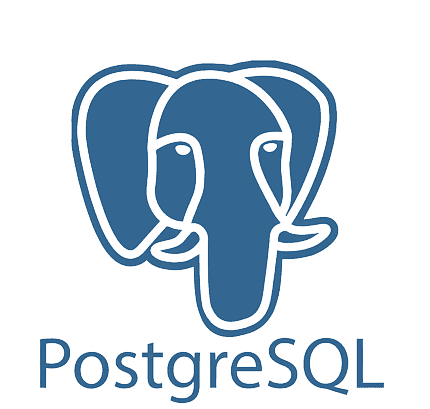
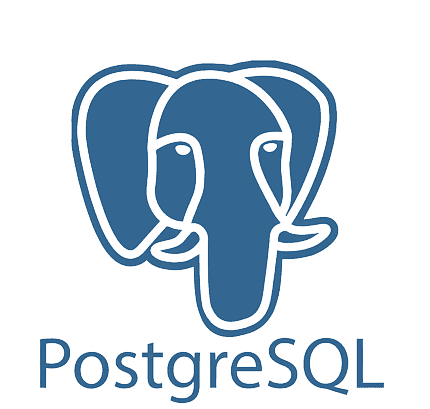

¿Quién Soy?
Hola, soy Cristian Sombra, un apasionado Full Stack Developer recién graduado, entusiasta del código y amante de los desafíos. Mi viaje en el mundo del desarrollo ha sido emocionante y educativo, y estoy emocionado por lo que el futuro tiene reservado para mí en este fascinante campo.
Links de contacto:
LinkedIn Twitter Correo¿Qué Hago?
Mi enfoque se centra en crear experiencias digitales excepcionales. Desde el frontend hasta el backend, me especializo en transformar ideas creativas en soluciones funcionales para construir aplicaciones web y móviles innovadoras y eficientes.
Portfolio:
PortfolioTecnologías que Utilizo

 

¿A Dónde Me Dirijo?
Mi viaje no ha hecho más que empezar. Mi objetivo es seguir creciendo como profesional y contribuir significativamente al mundo del desarrollo. Estoy en una búsqueda constante de conocimiento y nuevas experiencias. Mi pasión por la programación me impulsa a explorar nuevas tecnologías y prácticas para mantenerme al tanto de las últimas tendencias y desafíos en el campo del desarrollo web.
Me dedico a la excelencia, la innovación y la resolución creativa de problemas. Estoy aquí para aprender, crecer y hacer una diferencia en el mundo digital.
Gracias por visitar mi perfil de GitHub. Estoy emocionado por las oportunidades que el futuro tiene reservado, y espero colaborar, aprender y crear junto a quien quiera contar conmigo. 🚀✨